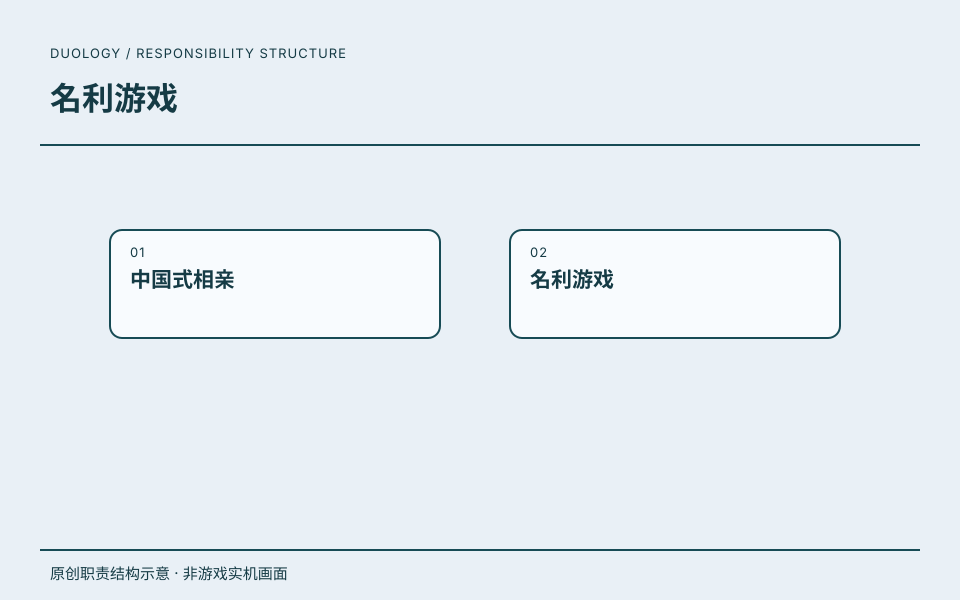

03 / 双项目记录 · PROJECT 02
名利游戏.
主策划 / 执行制作人
负责游戏内全部系统界面功能、线路图绘制与摆放；参与分支剧情的线路设计及数值奖励设计与配置，重点是非剧情向的系统和交互工作。
任职角色沿用履历记录；具体贡献按项目资料区分，共同职责不逐项归为单个项目的独立成果。
01
全部系统界面功能的设计
- 具体工作
- 负责游戏内全部系统界面功能，围绕菜单、设置、章节选择、分支线路、选项及图鉴等页面组织功能、跳转和状态反馈。
- 工作价值
- 把玩家从进入、游玩到回看的路径落实为界面与规则交付，不以产品题材代替个人工作。
系统功能与操作流程 ↗02
线路图绘制、摆放与分支线路设计
- 具体工作
- 负责线路图绘制与摆放，参与分支剧情的线路设计；工作重点是节点关系、线路组织和展示，不包含剧本撰写或剧情创作。
- 工作价值
- 将复杂分支整理为可浏览、可定位与可回看的结构，让玩家理解探索路径，让团队对齐分支连接。
线路图与交互表达 ↗03
数值奖励的设计与配置参与
- 具体工作
- 参与数值奖励设计与配置，结合文档中的选择数值、章节探索进度奖励及配置关系，说明系统规则与数据交付的连接。
- 工作价值
- 体现规则与配置之间的协作能力；不公开具体参数，不将参与配置扩大为全部经济系统独立主导。
数值奖励与配置关系 ↗
职责依据本人履历与确认；原图补充设计证据，经营结果另行说明来源与口径。

原创职责结构示意 · 非游戏实机画面ROLE / 我的角色主策划 / 执行制作人
负责游戏内全部系统界面功能、线路图绘制与摆放；参与分支剧情的线路设计及数值奖励设计与配置，重点是非剧情向的系统和交互工作。
CAREER / 项目记录任职记录
以主策划 / 执行制作人身份参与《中国式相亲》、《名利游戏》。
这里保留任职角色与项目记录。
RECORD / 可追溯记录项目记录
《名利游戏》列于这段任职经历中。
官方产品背景
以娱乐圈与导演人生为背景的真人互动叙事游戏。玩家跟随陆远，在权力、金钱与情感之间作出选择，推动多条故事线并走向不同结局。
玩法简介依据官方 Steam 页面；个人贡献见上方工作与资料记录。
查看官方项目介绍 ↗- 任职公司
- 北京波浪科技有限公司
- 角色
- 主策划 / 执行制作人
- 时间
- 2022.07—2025.07
任职、角色与职责依据本人履历及确认。图示是本站原创的职责结构表达。
DESIGN JOURNAL / 方案摘要
项目方案.
读背景、职责、方案与可证实产出。
个人职责由本人明确确认，不包含剧本撰写或剧情创作。项目文档未署名，不据此认定全部文档独立作者；美术与程序由团队相应岗位承担。历史需求和待定事项不作为最终上线范围或量化业绩证明。功能文档来自用户指定“名利游戏/文档”目录，保留此前已审核项目贴图，不公开完整剧情、视频或配置，不采用第三方竞品截图。
 名利游戏项目 Resources/UI/Menu/menu_bg.png，团队主菜单底图 · 非完整运行界面查看原图 ↗
名利游戏项目 Resources/UI/Menu/menu_bg.png，团队主菜单底图 · 非完整运行界面查看原图 ↗系统界面功能：入口、状态与跳转
 《名利游戏》策划案，三、思维导图 · 原始资料
《名利游戏》策划案，三、思维导图 · 原始资料设计问题
怎样将全部系统界面功能组织为连贯的操作路径，而非各自独立的菜单？
文档产出与来源
本人确认负责全部系统界面功能。策划案、附件2与需求清单提供菜单、设置、章节、线路、选项及图鉴等功能依据；文档未署名，不据职责确认推定全部文档独立撰写。
关键方案
- 拆分功能入口与交互状态，连接继续游戏、章节选择、故事线回看及设置返回。
- 选项区分锁定、隐藏与可选状态，选定后退出循环视频并收起选项，明确操作与反馈。
- 故事线支持拖动、定位当前节点和已解锁片段跳转，帮助玩家从路径浏览进入实际游玩。
- 资料中的手机、人物关系等待定功能仅作阶段需求，不由“全部系统界面职责”推定全部设想上线。
在页面内阅读系统界面功能：入口、状态与跳转大图
从存档续播到分支回看的操作闭环
 《名利游戏》策划案，四、操作流程；附件二亦有同图 · 原始资料
《名利游戏》策划案，四、操作流程；附件二亦有同图 · 原始资料设计问题
怎样让开始、继续、选择与失败回看形成连续体验，而不是孤立播放片段？
文档产出与来源
策划案与附件二中的原始操作流程图，不包含具体剧本、视频编号、选择答案或结局剧透。资料说明历史需求，不将存档、引擎与平台接入归为本人程序实现。
关键方案
- 按有无存档提供开始或继续入口，继续时回到记录片段，故事线入口提供章节与路径浏览。
- 循环片段承载选择等待，选定后进入对应视频；首次片段不提供跳过，已看内容的控制与未看内容区分。
- 失败结局后可回到故事线重新探索，节点解锁与路径点亮帮助玩家判断已看和未看内容。
- 章节完成与最终视频分别判断；播放结束后进入对应结局或返回主入口，进度和成就需求单独对齐。
在页面内阅读从存档续播到分支回看的操作闭环大图
线路图绘制与摆放、分支线路参与设计
 名利游戏项目 Resources/UI/Choose/choose_help_bg.png，团队故事线帮助贴图 · 原始资料
名利游戏项目 Resources/UI/Choose/choose_help_bg.png，团队故事线帮助贴图 · 原始资料设计问题
怎样将复杂分支整理成可浏览、可定位、可回看的节点结构，而不提前泄露剧情？
文档产出与来源
本人确认负责线路图绘制与摆放，参与分支剧情的线路设计，不包含剧本撰写或剧情创作。原始帮助贴图说明节点与连线的视觉规则，并非本人完整线路图或完整界面；具体剧情线路不公开。
关键方案
- 围绕节点关系与线路层级组织绘制、摆放及连接，衔接章节浏览和分支回看。
- 用节点、连线、锁定与点亮状态表达可探索路径；帮助图与文字共同说明状态，不只靠颜色识别。
- 线路拖动、定位当前节点与已解锁片段跳转服务重复探索，参与设计的是线路结构与系统呈现。
- 帮助贴图与图标为团队美术，不把线路图绘制职责扩大为美术资源制作或全部剧情独立设计。
在页面内阅读线路图绘制与摆放、分支线路参与设计大图
数值奖励设计与配置的参与
设计问题
如何将选择产生的数值变化、探索进度和领奖条件连接为可配置的系统规则？
文档产出与来源
本人确认参与数值奖励的设计与配置。策划案与附件2记载选择影响数值、章节探索奖励、结算统计及表格配置；材料支持关系摘要，不公开参数或完整配置，也不认定全部经济系统独立主导。
关键方案
- 区分选择产生的数值变化与探索进度奖励，使条件、结果和反馈各自有明确规则。
- 章节、选择跳转及角色数值在文档中由不同配置关系承接，体现功能需求与数据交付的连接。
- 探索奖励带有条件性描述，手机及部分扩展功能待定，不将需求条目写成最终上线清单。
- 展示非剧情向的数值和配置参与，不据此归属剧本、对白、剧情创作或程序实现。
 系统界面、线路图与奖励配置 · 本站原创脱敏结构图
系统界面、线路图与奖励配置 · 本站原创脱敏结构图PROJECT / 工作说明系统界面、线路图与奖励配置
项目背景
复杂分支需要通过系统界面、节点线路和进度反馈转为玩家可操作、团队可交付的体验。
本人职责
负责全部系统界面功能与线路图绘制摆放；参与分支线路设计、数值奖励设计与配置，不包含剧本撰写或剧情创作。
关键方案
组织功能入口和操作状态，整理节点关系与线路摆放，并连接选择数值、探索奖励和配置规则。
可证实产出
展示系统功能需求、线路结构与交互表达、数值奖励配置关系；职责依据本人确认，文档用于说明设计内容，不认定全部文档独立作者。
摘要依据：本人最新明确确认的职责；名利游戏文档目录中的策划案、附件2与玩法功能需求清单。本站原创脱敏结构图与原始项目资料分别标注；非剧情向工作不扩为剧本创作，历史方案与待定功能不认定全部上线；不公开剧透、完整配置和第三方参考图。
放大流程图 ↗阅读文档摘要 ↗ 在页面内阅读流程图＋
可滚动阅读大图；也可打开流程图缩放。下方文字提供同等内容。